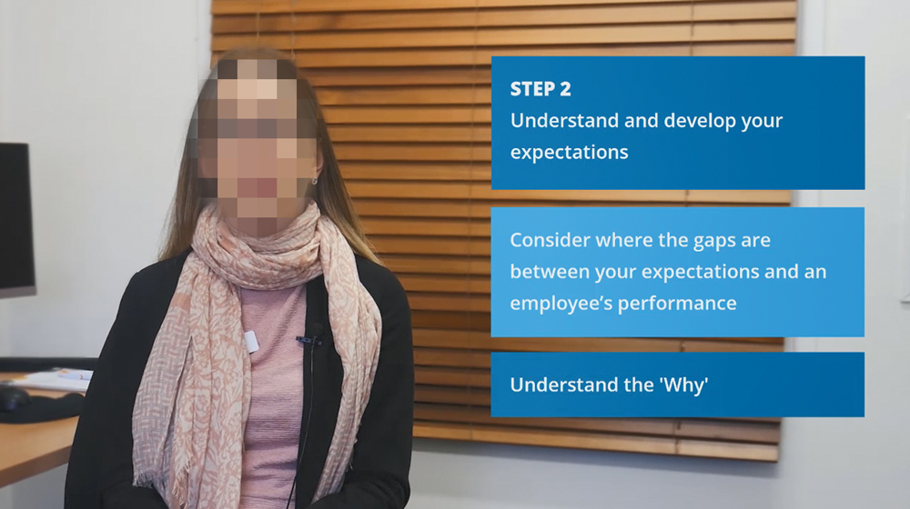
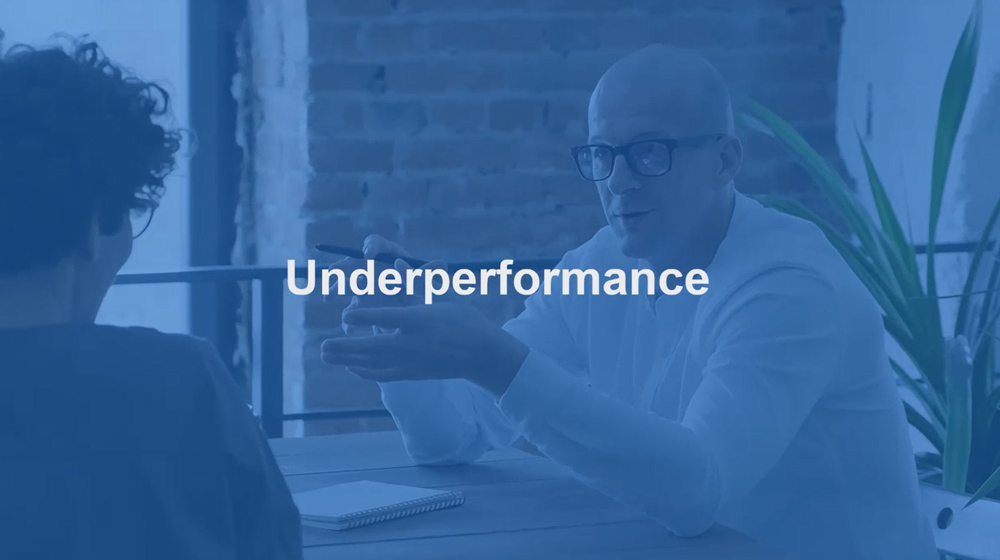
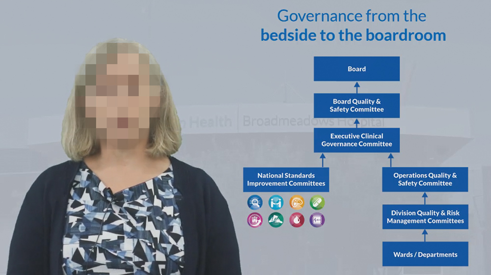

Produced video content for learning and HR projects, including scripting, editing, voiceover coordination, and visual design.
The videos supported training, onboarding, communication, and organisational initiatives by delivering clear, engaging, and accessible content for staff across multiple audiences.
Production of videos for HR and learning projects
Adobe Premiere, Adobe Audition
HR and L&D teams needed professional video content for key communications but had no internal production capability to deliver it.
Managed end-to-end production — scripting, filming coordination, editing and voiceover — using Adobe Premiere and Audition.
Delivered polished video assets used across onboarding, training programs and internal communications campaigns.


